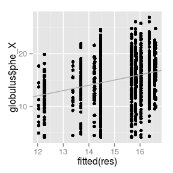
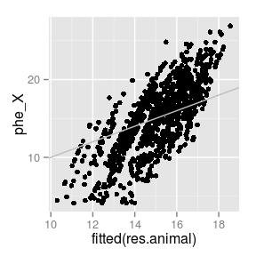
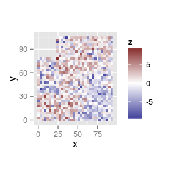
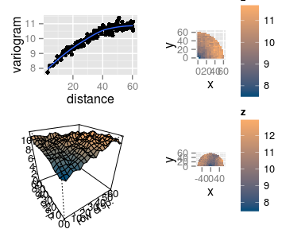
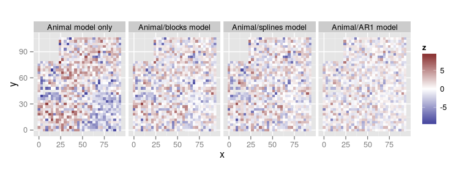
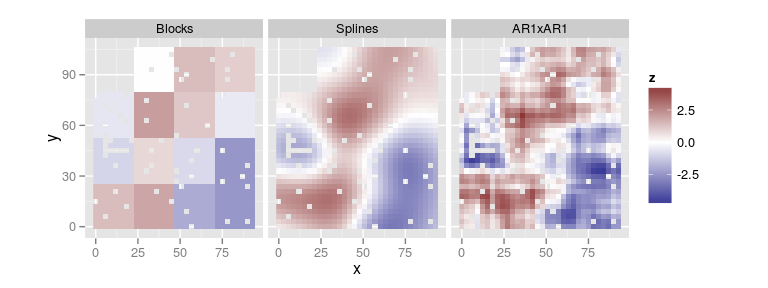
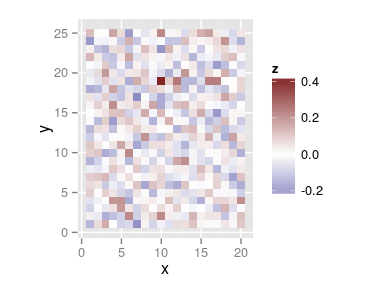
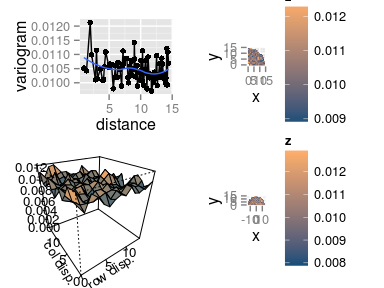

2015-06-30 breedR version: 0.10.7
Intro
What is breedR
- R-package implementing statistical models specifically suited for forest genetic resources analysts.
- Ultimately Mixed Models, but not necessarily easy to implement and use
breedR acts as an interface which provides the means to:
- Combine any number of these models as components of a larger model
- Compute automatically incidence and covariance matrices from a few input parameters
- Fit the model
- Plot data and results, and perform model diagnostics
Installation
- Project web page http://famuvie.github.io/breedR/
- download
.zipor.tar.gzsource files install.packages('famuvie-breedR-*', type = 'source', repos = NULL)
- download
- GitHub dev-site https://github.com/famuvie/breedR
if( !require(devtools) ) install.packages('devtools')devtools::install_github('famuvie/breedR')
- CRAN not possible… ask I. Misztal
install.packages('breedR')
Where to find help
- Package's help:
help(package = breedR)- Help pages
?remlf90 - Code demos
demo(topic, package = 'breedR')(omittopicfor a list) - Vignettes
vignette(package = 'breedR')(pkg and wiki)
- Help pages
- Wiki pages
- Guides, tutorials, FAQ
- Mailing list http://groups.google.com/group/breedr
- Questions and debates about usage and interface
- Issues page
- Bug reports
- Feature requests
License
- breedR is FOSS. Licensed GPL-3
RShowDoc('LICENSE', package = 'breedR')
- You can use and distribute breedR for any purpose
- You can modify it to suit your needs
- we encourage to!
- please consider contributing your improvements
- you can distribute your modified version under the GPL
- However, breedR makes (intensive) use of the
BLUPF90suite of Fortran programs, which are for free but not free (remember CRAN?)
Roadmap
(very near, promise) Future developments
Bayesian inference
Multi-trait support
Genotype\(\times\)Environment interaction *
Support for longitudinal data
Functionality
{kind=link}
Inference
Frequentist
Currently, only frequentist inference is supported via REML estimation of variance components.
The function
remlf90(), provides an interface to bothREMLF90andAIREMLF90functions in theBLUPF90suite of Fortran programs.Type
?remlf90for details on the syntax
Bayesian
Linear Mixed Models with unstructured random effects
Example dataset
| self | dad | mum | gen | gg | bl | phe_X | x | y |
|---|---|---|---|---|---|---|---|---|
| 69 | 0 | 64 | 1 | 14 | 13 | 15.756 | 0 | 0 |
| 70 | 0 | 41 | 1 | 4 | 13 | 11.141 | 3 | 0 |
| 71 | 0 | 56 | 1 | 14 | 13 | 19.258 | 6 | 0 |
| 72 | 0 | 55 | 1 | 14 | 13 | 4.775 | 9 | 0 |
| 73 | 0 | 22 | 1 | 8 | 13 | 19.099 | 12 | 0 |
| 74 | 0 | 50 | 1 | 14 | 13 | 19.258 | 15 | 0 |
## Eucalyptus Globulus dataset ## Thanks to Eduardo Cappa and Pablo Pathauer ## Variables: ## self = id of the tree ## dad = id of sire or 0 if unknown ## mum = id of dam or 0 if unknown ## gen = generation (there is only 1) ## gg = genetic group ## bl = block ## phe_X= observed phenotype ## x, y = coordinates (in m)
## 'data.frame': 1021 obs. of 9 variables: ## $ self : int 69 70 71 72 73 74 75 76 77 78 ... ## $ dad : int 0 0 0 0 0 0 0 0 0 4 ... ## $ mum : int 64 41 56 55 22 50 67 59 49 8 ... ## $ gen : Factor w/ 1 level "1": 1 1 1 1 1 1 1 1 1 1 ... ## $ gg : Factor w/ 14 levels "1","2","3","4",..: 14 4 14 14 8 14 14 14 14 11 ... ## $ bl : Factor w/ 15 levels "1","2","3","4",..: 13 13 13 13 13 13 13 13 9 9 ... ## $ phe_X: num 15.76 11.14 19.26 4.78 19.1 ... ## $ x : int 0 3 6 9 12 15 18 21 24 27 ... ## $ y : int 0 0 0 0 0 0 0 0 0 0 ...
A simple Provenance Test
Specify the genetic group gg as an unstructured random effect using the standard formulas in R
\[ \begin{aligned} \mathrm{phe}_X = & \mu + Z \mathrm{gg} + \varepsilon \\ \mathrm{gg} \sim & N(0, \sigma_{\mathrm{gg}}^2) \\ \varepsilon \sim & N(0, \sigma_\varepsilon^2) \end{aligned} \]
res <- remlf90(fixed = phe_X ~ 1,
random = ~ gg,
data = globulus)
## No specification of initial variances. ## Using default value of 1 for all variance components. ## See ?breedR.getOption.
Initial variances specification
To avoid the notification, initial values for all the variance components must be made explicit using the argument var.ini:
res <- remlf90(fixed = phe_X ~ 1,
random = ~ gg,
var.ini = list(gg = 2, resid = 10),
data = globulus)
Although in most cases the results will not change at all, we encourage to give explicit initial values for variance components. Specially when some estimate can be artifact. This is also useful for checking sensitivity to initial values.
Exploring the results
summary(res)
## Linear Mixed Model with pedigree and spatial effects fit by AI-REMLF90 ver. 1.110 ## Data: globulus ## AIC BIC logLik ## 5864 5874 -2930 ## ## Parameters of special components: ## ## ## Variance components: ## Estimated variances S.E. ## gg 2.857 1.3584 ## Residual 17.695 0.7888 ## ## Fixed effects: ## value s.e. ## Intercept 14.799 0.4911
- Note that
AI-REMLhas been used by default. - You can also specify
method = 'em'. - Learn about the difference.
Further extractor functions
fixef(res)
## $Intercept ## value s.e. ## 1 14.79913 0.4910935
ranef(res)
## $gg ## value s.e. ## 1 -1.1113032 0.6582248 ## 2 -0.5850024 0.8241564 ## 3 1.2381745 0.6017960 ## 4 -2.5360696 0.7047334 ## 5 1.0223495 0.6298412 ## 6 -2.7605972 1.0884708 ## 7 -0.5691185 0.9776415 ## 8 0.8700427 0.5933967 ## 9 1.5572487 0.6381501 ## 10 -1.4262293 0.9961142 ## 11 1.7715259 0.6527005 ## 12 1.8079965 0.8241564 ## 13 1.0604399 0.9776415 ## 14 -0.3394576 0.5380187
Further extractor functions
qplot(
fitted(res),
globulus$phe_X) +
geom_abline(int = 0,
sl = 1,
col = 'darkgrey')

str(resid(res))
## Named num [1:1021] 1.3 -1.12 4.8 -9.68 3.43 ... ## - attr(*, "names")= chr [1:1021] "1" "2" "3" "4" ...
extractAIC(res)
## [1] 5863.716
logLik(res)
## 'log Lik.' -2929.858 (df=2)
Hierarchical and Factorial models
In globulus, the family (
mum) is nested within the provenance (gg)This is a matter of codification:
Nested factors
| gg | mum |
|---|---|
| A | 1 |
| A | 2 |
| B | 3 |
| B | 4 |
Crossed factors
| gg | mum |
|---|---|
| A | 1 |
| A | 2 |
| B | 1 |
| B | 2 |
Model specification
- Otherwise, in both cases we specify the model in the same way:
random = ~ gg + factor(mum) # note that mum is numeric
- Furthermore, this approach can handle unbalanced and mixed designs
Interactions
- Standard
Rnotation:
random = ~ gg * factor(mum)
Not available yet (feature request?)
Workaround: build the interaction variable manually
Example:
ggandblockare crossed factors
dat <- transform(globulus,
interaction = factor(gg:bl))
random = ~ gg + bl + interaction
Exercise
Hierarchical and Factorial models
- Use
remlf90()and the globulus dataset to fit- a hierarchical model using
mumwithingg - a factorial model using
ggandbl
- a hierarchical model using
- Explore the results with
summary()- is the family (
mum) effect relevant? - is there any evidence of interaction between
ggandbl?
- is the family (
Hierarchical and Factorial models #1
Fitting models
res.h <- remlf90(fixed = phe_X ~ 1,
random = ~ factor(mum) + gg,
data = globulus)
# Interaction variable
globulus.f <- transform(globulus,
gg_bl = factor(gg:bl))
res.f <- remlf90(fixed = phe_X ~ 1,
random = ~ gg + bl + gg_bl,
data = globulus.f)
Hierarchical and Factorial models #2
Hierarchical model
- The family effect is not very important, in terms of explained variance
- However, the model is a bit better with it (AIC, logLik)
summary(res) summary(res.h)
Hierarchical and Factorial models #3
Factorial model
- Looks like the interaction between block and provenance is negligible
- (apart from the fact that it makes no sense at all, and shuld not have been even considered in the first place)
- compare with the model without interaction
summary(res.f)
## result without interaction
res.f0 <- remlf90(fixed = phe_X ~ 1,
random = ~ gg + bl,
data = globulus)
paste('AIC:', round(extractAIC(res.f0)),
'logLik:', round(logLik(res.f0)))
Additive Genetic Effect

What is an additive genetic effect
- Random effect at individual level
- Based on a pedigree
- BLUP of Breeding Values from own and relatives' phenotypes
- Represents the additive component of the genetic value
- More general:
- family effect is a particular case
- accounts for more than one generation
- mixed relationships
- More flexible: allows to select individuals within families
Specifying a pedigree
A 3-column
data.frameormatrixwith the codes for each individual and its parents- A family effect is easily translated into a pedigree:
- use the family code as the identification of a fictitious mother
- use
0orNAas codes for the unknown fathers
| self | dad | mum |
|---|---|---|
| 69 | 0 | 64 |
| 70 | 0 | 41 |
| 71 | 0 | 56 |
| 72 | 0 | 55 |
| 73 | 0 | 22 |
| 74 | 0 | 50 |
Fitting an animal model
res.animal <- remlf90(fixed = phe_X ~ 1,
random = ~ gg,
genetic = list(model = 'add_animal',
pedigree = globulus[, 1:3],
id = 'self'),
data = globulus)
Animal model: results
summary(res.animal)
## Linear Mixed Model with pedigree and spatial effects fit by AI-REMLF90 ver. 1.110 ## Data: globulus ## AIC BIC logLik ## 5857 5872 -2926 ## ## Parameters of special components: ## ## ## Variance components: ## Estimated variances S.E. ## gg 2.356 1.249 ## genetic 3.632 1.649 ## Residual 14.271 1.561 ## ## Fixed effects: ## value s.e. ## Intercept 14.797 0.47
ggexplains almost the same amount of phenotypic variability- The (additive)
geneticeffect explains part of the formerly residual variance
Extracting Predicted Breeding Values
## Predicted Breeding Values
# for the full pedigree first, and
# for the observed individuals by
# matrix multiplication with the
# incidence matrix
PBV.full <- ranef(res.animal)$genetic
PBV <-
model.matrix(res.animal)$genetic %*%
PBV.full
# Predicted genetic values vs.
# phenotype.
# Note: fitted = mu + PBV
qplot(fitted(res.animal), phe_X,
data = globulus) +
geom_abline(int = 0,
slope = 1,
col = 'gray')

Handling pedigrees
The pedigree needs to meet certain conditions
If it does not, breedR automatically completes, recodes and sorts
If recoding is necessary, breedR issues a warning because you need to be careful when retrieving results
See this guide for more details
Spatial autocorrelation

What is spatial autocorrelation
The residuals of any LMM must be noise
However, most times there are environmental factors that affect the response
This causes that observations that are close to each other tend to be more similar that observations that are far away
This is called spatial autocorrelation
It may affect both the estimations and their accuracy
This is why experiments are randomized into spatial blocks
Diagnosing spatial autocorrelation
residuals spatial plot
You can
plot()the spatial arrangement of various model components (e.g. residuals)Look like independent gaussian observations (i.e. noise)?
Do you see any signal in the background?
## Since coordinates have not
## been passed before they
## must be provided explicitly.
coordinates(res.animal) <-
globulus[, c('x', 'y')]
plot(res.animal, 'resid')

Diagnosing spatial autocorrelation
variograms of residuals
- Plot the variogram of residuals with
variogram()
variogram(res.animal)
Interpreting the variograms
- Isotropic variogram: \[ \gamma(h) = \frac12 V[Z(\mathbf{u}) - Z(\mathbf{v})], \quad \text{dist}(\mathbf{u}, \mathbf{v}) = h \]
The empirical isotropic variogram is built by aggregating all the pairs of points separated by \(h\), no matter the direction.
Interpreting the variograms
- Row/Column variogram: \[ \gamma(x, y) = \frac12 V[Z(\mathbf{u}) - Z(\mathbf{v})], \quad \text{dist}(\mathbf{u}, \mathbf{v}) = (x, y) \]
The empirical row/col variogram is built by aggregating all the pairs of points separated by exactly \(x\) rows and \(y\) columns.
Interpreting the variograms
- Anisotropic variogram: \[ \gamma(\mathbf{x}) = \frac12 V[Z(\mathbf{u}) - Z(\mathbf{v})], \quad \mathbf{u} = \mathbf{v} \pm \mathbf{x} \]
The empirical anisotropic variogram is built by aggregating all the pairs of points in the same direction separated by \(|\mathbf{x}|\).
Accounting for spatial autocorrelation
Include an explicit spatial effect in the model
I.e., a random effect with a specific covariance structure that reflects the spatial relationship between individuals
- The block effect, is a very particular case:
- It is designed from the begining, possibly using prior knowledge
- Introduces independent effects between blocks
- Most neighbours are within the same block (i.e. share the same effect)
The blocks model
# The genetic component (DRY)
gen.globulus <- list(model = 'add_animal',
pedigree = globulus[, 1:3],
id = 'self')
res.blk <- remlf90(fixed = phe_X ~ 1,
random = ~ gg,
genetic = gen.globulus,
spatial = list(model = 'blocks',
coord = globulus[, c('x', 'y')],
id = 'bl'),
data = globulus)
- The
blocksspatial model is equivalent torandom = ~ bl, but:- specifying
coordis convenient for plotting (remember?) blocksbehaves as expected, even ifblis not a factor
- specifying
Animal-spatial model: results
summary(res.blk)
## Linear Mixed Model with pedigree and spatial effects fit by AI-REMLF90 ver. 1.110 ## Data: globulus ## AIC BIC logLik ## 5734 5753 -2863 ## ## Parameters of special components: ## spatial: n.blocks: 15 ## ## Variance components: ## Estimated variances S.E. ## gg 2.385 1.274 ## genetic 5.275 1.836 ## spatial 2.650 1.081 ## Residual 10.279 1.601 ## ## Fixed effects: ## value s.e. ## Intercept 14.762 0.6342
- Now the additive-genetic variance increased! (\(3.6\) before)
Variogram of residuals
- There seems to remain some intra-block spatial autocorrelation
B-Splines model
- A continuous and smooth spatial surface built from a linear combination of basis functions
- The coefficients are modelled as a random effect
## Use the `em` method! `ai` does not like splines
res.spl <- remlf90(fixed = phe_X ~ 1,
random = ~ gg,
genetic = gen.globulus,
spatial = list(model = 'splines',
coord = globulus[, c('x','y')]),
data = globulus, method = 'em')
Autoregressive model
- A separable kronecker product of First order Autoregressive processes on the rows and the colums
res.ar1 <- remlf90(fixed = phe_X ~ 1,
random = ~ gg,
genetic = gen.globulus,
spatial = list(model = 'AR',
coord = globulus[, c('x','y')]),
data = globulus)
Change in model residuals
- We preserve the scale by using
compare.plots()
compare.plots(
list(`Animal model only` = plot(res.animal, 'residuals'),
`Animal/blocks model` = plot(res.blk, 'residuals'),
`Animal/splines model` = plot(res.spl, 'residuals'),
`Animal/AR1 model` = plot(res.ar1, 'residuals')))

Comparison of spatial components
compare.plots(list(Blocks = plot(res.blk, type = 'spatial'),
Splines = plot(res.spl, type = 'spatial'),
AR1xAR1 = plot(res.ar1, type = 'spatial')))

Prediction of the spatial effect in unobserved locations
The type
fullspatialfills the holes (when possible)See
?plot.remlf90
compare.plots(list(Blocks = plot(res.blk, type = 'fullspatial'),
Splines = plot(res.spl, type = 'fullspatial'),
AR1xAR1 = plot(res.ar1, type = 'fullspatial')))

Spatial parameters
Number of knots of a splines model
The smoothness of the spatial surface can be controlled modifying the number of base functions
This is, directly determined by the number of knots (nok) in each dimension
n.knotscan be used as an additional argument in thespatialeffect as a numeric vector of size 2.Otherwise, is determined by the function given in
breedR.getOption('splines.nok')
Spatial parameters
Autoregressive parameters of a AR model
Analogously, the patchiness of the
AReffects can be controlled by the autoregressive parameter for each dimensionrhocan be given as an additional argument in thespatialeffect as a numeric vector of size 2By default, breedR runs all the combinations in the grid produced by the values from
breedR.getOption('ar.eval')and returns the one with largest likelihoodIt returns also the full table of combinations and likelihoods in
res$rho
Exercise
Tuning spatial parameters
- Tuning parameters:
- model
splines:n.knots - model
AR:rho
- model
Increase the number of knots in the
splinesmodel and see if it improves the fitVisualize the log-likelihood of the fitted
ARmodelsRefine the grid around the most likely values, and refit using
rho = rho.grid, where
rho.grid <- expand.grid(rho_r = seq(.7, .95, length = 4),
rho_c = seq(.7, .95, length = 4))
- What are now the most likely parameters?
Spatial #1
B-splines model with increased nok
nokwere (6, 6) by default (seesummary())
res.spl99 <- remlf90(fixed = phe_X ~ 1, random = ~ gg,
genetic = gen.globulus,
spatial = list(model = 'splines',
coord = globulus[, c('x','y')],
n.knots = c(9, 9)),
data = globulus, method = 'em')
Spatial #2
Visualize log-likelihoods
qplot(rho_r, rho_c,
fill = loglik,
geom = 'tile',
data = res.ar1$rho)
| rho_r | rho_c | loglik |
|---|---|---|
| -0.8 | -0.8 | -2925.664 |
| -0.2 | -0.8 | -2925.665 |
| 0.2 | -0.8 | -2925.656 |
| 0.8 | -0.8 | -2925.636 |
| -0.8 | -0.2 | -2925.661 |
| -0.2 | -0.2 | -2925.655 |
| 0.2 | -0.2 | -2925.023 |
| 0.8 | -0.2 | -2876.893 |
| -0.8 | 0.2 | -2925.656 |
| -0.2 | 0.2 | -2925.647 |
| 0.2 | 0.2 | -2871.693 |
| 0.8 | 0.2 | -2849.814 |
| -0.8 | 0.8 | -2925.646 |
| -0.2 | 0.8 | -2890.606 |
| 0.2 | 0.8 | -2860.981 |
| 0.8 | 0.8 | -2828.017 |
Spatial #3
Refine grid
res.ar.grid <- remlf90(fixed = phe_X ~ gg,
genetic = list(model = 'add_animal',
pedigree = globulus[,1:3],
id = 'self'),
spatial = list(model = 'AR',
coord = globulus[, c('x','y')],
rho = rho.grid),
data = globulus)
summary(res.ar.grid)
Competition
Theoretical model

- Each individual have two (unknown) Breeding Values (BV)
- The
directBV affects its own phenotype, while thecompetitionBV affects its neghbours' (as the King moves)
- The effect of the neighbouring
competitionBVs is given by their sum weighted by \(1/d^\alpha\), where \(\alpha\) is a tuning parameter calleddecay
- Each set of BVs is modelled as a zero-mean random effect with structure matrix given by the pedigree and independent variances \(\sigma^2_a\) and \(\sigma^2_c\)
- Both random effects are modelled jointly with correlation \(\rho\)
Permanent Environmental Effect (pec)
Optional effect with environmental (rather than genetic) basis
Modelled as an individual independent random effect that affects neighbouring trees in the same (weighted) way
Simulation of data
breedR implements a convenient dataset simulator which keeps a similar syntax.
- See
?simulationfor details on the syntax
# Simulation parameters
grid.size <- c(x=20, y=25) # cols/rows
coord <- expand.grid(sapply(grid.size,
seq))
Nobs <- prod(grid.size)
Nparents <- c(mum = 20, dad = 20)
sigma2_a <- 2 # direct add-gen var
sigma2_c <- 1 # compet add-gen var
rho <- -.7 # gen corr dire-comp
sigma2_s <- 1 # spatial variance
sigma2_p <- .5 # pec variance
sigma2 <- .5 # residual variance
S <- matrix(c(sigma2_a,
rho*sqrt(sigma2_a*sigma2_c),
rho*sqrt(sigma2_a*sigma2_c),
sigma2_c),
2, 2)
set.seed(12345)
simdat <-
breedR.sample.phenotype(
fixed = c(beta = 10),
genetic = list(model = 'competition',
Nparents = Nparents,
sigma2_a = S,
check.factorial=FALSE,
pec = sigma2_p),
spatial = list(model = 'AR',
grid.size = grid.size,
rho = c(.3, .8),
sigma2_s = sigma2_s),
residual.variance = sigma2
)
## Remove founders
dat <- subset(simdat,
!(is.na(simdat$sire)
& is.na(simdat$dam)))Fitting a competition model
system.time(
res.comp <- remlf90(fixed = phenotype ~ 1,
genetic = list(model = 'competition',
pedigree = dat[, 1:3],
id = 'self',
coord = dat[, c('x', 'y')],
competition_decay = 1,
pec = list(present = TRUE)),
spatial = list(model = 'AR',
coord = dat[, c('x', 'y')],
rho = c(.3, .8)),
data = dat,
method = 'em') # AI diverges
)
## user system elapsed ## 94.458 0.180 94.652
True vs. estimated parameters
| True | Estimated | |
|---|---|---|
| direct | 2.0 | 2.50 |
| compet. | 1.0 | 1.03 |
| correl. | -0.7 | -0.76 |
| spatial | 1.0 | 1.24 |
| pec | 0.5 | 0.20 |
| residual | 0.5 | 0.17 |

Exercise
Competition models
- Plot the true vs predicted:
- direct and competition Breeding Values
- spatial effects
- pec effects
- Plot the residuals and their variogram
- Do you think the residuals are independent?
- How would you improve the analysis?
Competition #1
True vs. predicted components
## compute the predicted effects for the observations
## by matrix multiplication of the incidence matrix and the BLUPs
pred <- list()
Zd <- model.matrix(res.comp)$'genetic_direct'
pred$direct <- Zd %*% ranef(res.comp)$'genetic_direct'
## Watch out! for the competition effects you need to use the incidence
## matrix of the direct genetic effect, to get their own value.
## Otherwise, you get the predicted effect of the neighbours on each individual.
pred$comp <- Zd %*% ranef(res.comp)$'genetic_competition'
pred$pec <- as.vector(model.matrix(res.comp)$pec %*% ranef(res.comp)$pec)
comp.pred <-
rbind(data.frame(Component = 'direct BV', True = dat$BV1, Predicted = pred$direct),
data.frame(Component = 'competition BV', True = dat$BV2, Predicted = pred$comp),
data.frame(Component = 'pec', True = dat$pec, Predicted = pred$pec))
ggplot(comp.pred,
aes(True, Predicted)) +
geom_point() +
geom_abline(int = 0, sl = 1,
col = 'darkgray') +
facet_grid(~ Component)

The predition of the Permanent Environmental Competition effect is not precisely great…
Competition #2
Map of residuals and their variogram
plot(res.comp, type = 'resid') variogram(res.comp)
 
Generic component
Generic model
This additional component allows to introduce a random effect \(\psi\) with arbitrary incidence and covariance matrices \(Z\) and \(\Sigma\):
\[ \begin{aligned} y = & \mu + X \beta + Z \psi + \varepsilon \\ \psi \sim & N(0, \sigma_\psi^2 \Sigma_\psi) \\ \varepsilon \sim & N(0, \sigma_\varepsilon^2) \end{aligned} \]
Implementation of the generic component
## Fit a blocks effect using generic
inc.mat <- model.matrix(~ 0 + bl, globulus)
cov.mat <- diag(nlevels(globulus$bl))
res.blg <- remlf90(fixed = phe_X ~ gg,
generic = list(block = list(inc.mat,
cov.mat)),
data = globulus)
Example of result
## Linear Mixed Model with pedigree and spatial effects fit by AI-REMLF90 ver. 1.110 ## Data: globulus ## AIC BIC logLik ## 5691 5701 -2844 ## ## Parameters of special components: ## ## ## Variance components: ## Estimated variances S.E. ## block 2.592 1.0640 ## Residual 15.208 0.6824 ## ## Fixed effects: ## value s.e. ## gg.1 13.534 0.6222 ## gg.2 14.030 0.8464 ## gg.3 16.106 0.5513 ## gg.4 11.854 0.6824 ## gg.5 15.883 0.5862 ## gg.6 10.220 1.3040 ## gg.7 13.995 1.0893 ## gg.8 15.728 0.5409 ## gg.9 16.478 0.5969 ## gg.10 12.843 1.1225 ## gg.11 16.744 0.6151 ## gg.12 17.002 0.8464 ## gg.13 16.297 1.0893 ## gg.14 14.429 0.4730
Prediction
Predicting values for unobserved trees
You can predict the Breeding Value of an unmeasured tree
Or the expected phenotype of a death tree (or an hypothetical scenario)
Information is gathered from the covariates, the spatial structure and the pedigree
Simply include the individual in the dataset with the response set as
NA
Leave-one-out cross-validation
Re-fit the simulated competition data with one measurement removed
Afterwards, compare the predicted values for the unmeasured individuals with their true simulated values
rm.idx <- 8
rm.exp <- with(dat[rm.idx, ],
phenotype - resid)
dat.loo <- dat
dat.loo[rm.idx, 'phenotype'] <- NA
| True | Pred.loo | |
|---|---|---|
| direct BV | -1.48 | 0.11 |
| competition BV | 0.46 | 0.36 |
| exp. phenotype | 6.80 | 9.90 |
Exercise
Cross validation
Extend the last table to include the predicted value when the phenotype is measured
- Remove 1/10th of the phenotypes randomly, and predict their expected phenotype
- Have the parameter estimations changed too much?
Compute the Root Mean Square Error (RMSE) of Prediction with respect to the true values
Cross-validation #1
Include prediction with full data
pred.BV.mat <- with(ranef(res.comp), cbind(`genetic_direct`,
`genetic_competition`))
pred.genetic.loo <-
Zd[rm.idx, ] %*% with(ranef(res.comp),
cbind(`genetic_direct`,
`genetic_competition`))
valid.pred$Pred.full <- c(Zd[rm.idx, ] %*% pred.BV.mat,
fitted(res.comp)[rm.idx])
knitr::kable(round(valid.pred[,c(1,3,2)],
2))
| True | Pred.full | Pred.loo | |
|---|---|---|---|
| direct BV | -1.48 | -1.30 | 0.11 |
| competition BV | 0.46 | 0.99 | 0.36 |
| exp. phenotype | 6.80 | 7.29 | 9.90 |
Cross-validation #2
Perform cross-validation on 1/10th of the observations
rm.idx <- sample(nrow(dat),
nrow(dat)/10)
dat.cv <- dat
dat.cv[rm.idx, 'phenotype'] <- NA
## Re-fit the model and build table
| Fully.estimated | CV.estimated | |
|---|---|---|
| direct | 2.50 | 2.69 |
| compet. | 1.03 | 0.86 |
| correl. | -0.76 | -0.80 |
| spatial | 1.24 | 1.03 |
| pec | 0.20 | 0.51 |
| residual | 0.17 | 0.14 |
Cross-validation #3
MSE of Prediction
true.exp.cv <- with(dat[rm.idx, ], phenotype - resid) round(sqrt(mean((fitted(res.comp.cv)[rm.idx] - true.exp.cv)^2)), 2)
## [1] 1.5
Some more features
Metagene interface
We have used simulated data from the
metagenesoftwareIf you simulate data, import the results with
read.metagene()- Use several common methods with a
metageneobject:summary(),plot(),as.data.frame()
- Plus some more specific
metagenefunctions:b.values(),get.ntraits(),ngenerations(),nindividuals(),get.pedigree()
- And specific functions about spatial arrangement:
coordinates()extract coordinatessim.spatial()simulates some spatial autocorrelation
Simulation framework
The function
breedR.sample.phenotype()simulates datasets from all the model structures available in breedRLimitation: only one generation, with random matings of founders
See
?simulationfor details
Remote computation
If you have access to a Linux server through SSH, you can perform computations remotely
Take advantage of more memory or faster processors
Parallelize jobs
Free local resources while fitting models
See
?remotefor details
Package options
breedR features a list of configurable options
Use
breedR.setOption(...)for changing an option during the current sesionSet options permanently in the file
$HOME/.breedRrcsee
?breedR.optionfor details
breedR.getOption()
## $ar.eval ## [1] -0.8 -0.2 0.2 0.8 ## ## $breedR.bin ## [1] "/home/facu/lib/R/library/breedR/bin/linux" ## ## $splines.nok ## determine.n.knots ## ## $default.initial.variance ## [1] 1 ## ## $col.seq ## [1] "#034E7B" "#FDAE6B" ## ## $col.div ## [1] "#3A3A98FF" "#832424FF" ## ## $cygwin ## [1] "C:/cygwin" ## ## $cygwin.home ## [1] "/home/facu" ## ## $ssh.auth.sock ## [1] "/tmp/ssh-auth-sock-facu" ## ## $remote.host ## [1] "eldorado" ## ## $remote.user ## [1] "fmunoz" ## ## $remote.port ## [1] 22 ## ## $remote.bin ## [1] "/home/fmunoz/R/x86_64-unknown-linux-gnu-library/3.0/breedR/bin/linux" ## ## $ssh.options ## [1] "-x -o BatchMode=yes -o TCPKeepAlive=yes -e none"